We randomly selected a few from the test set of the dataset used.
WAKE is the first key-controllable audio watermark framework, which aims to embed watermarks into audio and decode the embedded watermarks using specific keys, as shown in the following Figure. If an incorrect key is used, it will be impossible to decode the correct watermark, substantially enhancing the watermarking system's security and scalability while also fulfilling personalized watermarks. Notably, WAKE can achieve multiple watermark embeddings and corresponding watermark decoding based on the key used during embedding. WAKE outperforms the current state-of-the-art audio watermarking models in watermarked audio quality and decoding performance.
We randomly selected a few from the test set of the dataset used.
| LibriSpeech | FMA | AudioSet | CommonVoice | |
|---|---|---|---|---|
| Origin Audio | ||||
| AudioSeal (single watermark) | ||||
| WavMark (single watermark) | ||||
| WAKE(proposed) (single watermark) | ||||
| AudioSeal (double watermark) | ||||
| WavMark (double watermark) | ||||
| WAKE(proposed) (double watermark) |
Sampled from outside the train/test dataset.
| Sample 1 | Sample 2 | Sample 3 | |
|---|---|---|---|
| Origin Audio | |||
| AudioSeal (single watermark) | |||
| WavMark (single watermark) | |||
| WAKE(proposed) (single watermark) | |||
| AudioSeal (double watermark) | |||
| WavMark (double watermark) | |||
| WAKE(proposed) (double watermark) |
In this experiment, we add different watermarks to a piece of audio sampled from LibriSpeech using AudioSeal, WavMark and WAKE(proposed) several times.
| Origin Audio | 1 | 2 | 5 | 10 | |
|---|---|---|---|---|---|
| AudioSeal | |||||
| WavMark | |||||
| WAKE(proposed) |
In this experiment, we add different watermarks to a piece of audio sampled from FMA using AudioSeal, WavMark and WAKE(proposed) several times
| Origin Audio | 1 | 2 | 5 | 10 | |
|---|---|---|---|---|---|
| AudioSeal | |||||
| WavMark | |||||
| WAKE(proposed) |
In this experiment, we add different watermarks to a piece of audio using AudioSeal, WavMark and WAKE(proposed) several times, and the spectrogram and audio are as follows.
| AudioSeal | WavMark | WAKE(proposed) | |
|---|---|---|---|
| Origin Audio | 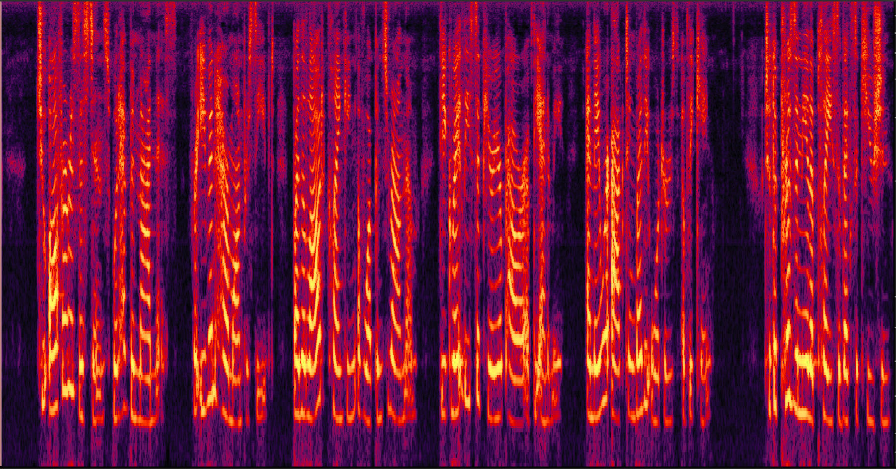 | ||
| Watermark 1 time | 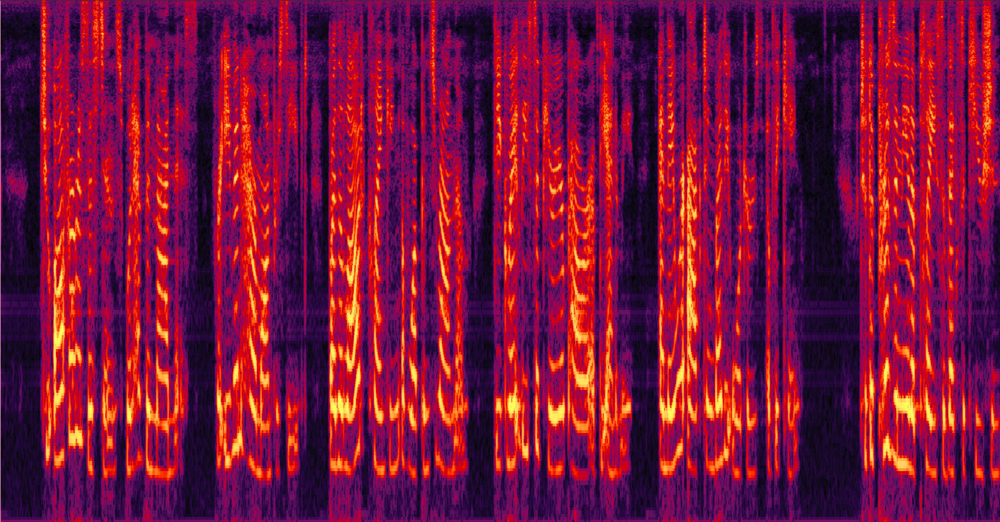 | 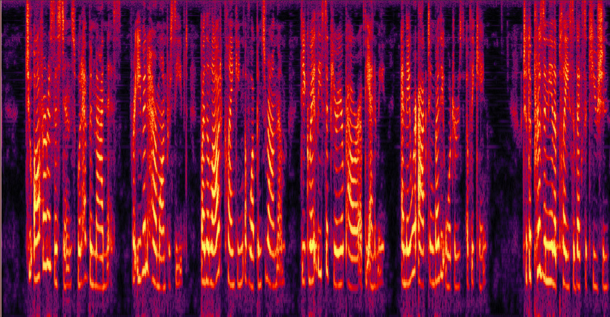 | 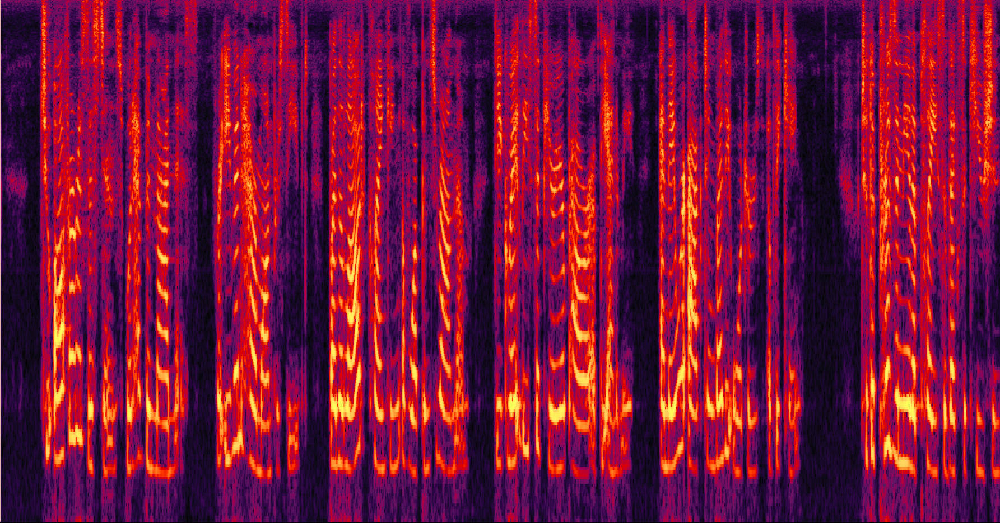 |
| Watermark 2 times | 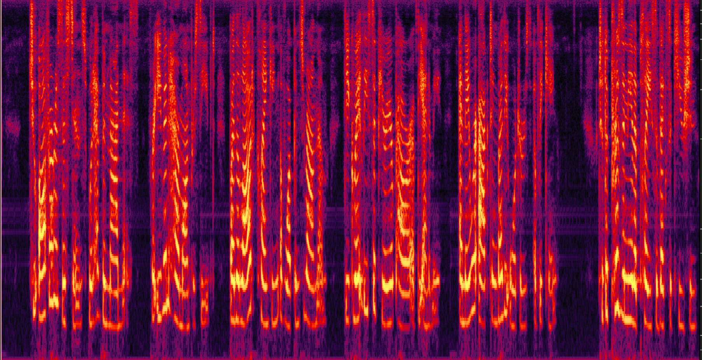 | 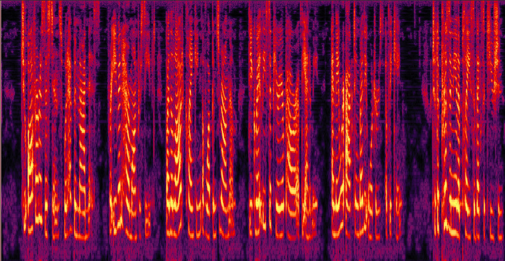 | 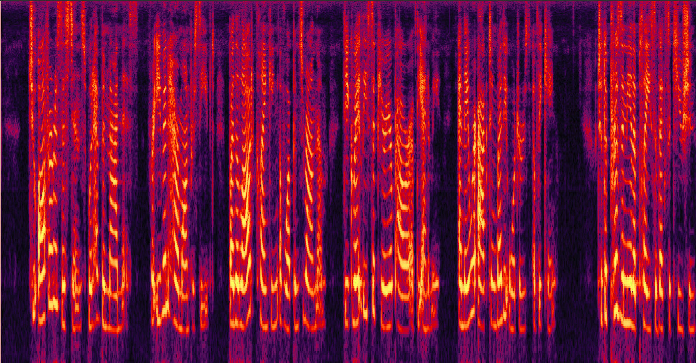 |
| Watermark 5 times | 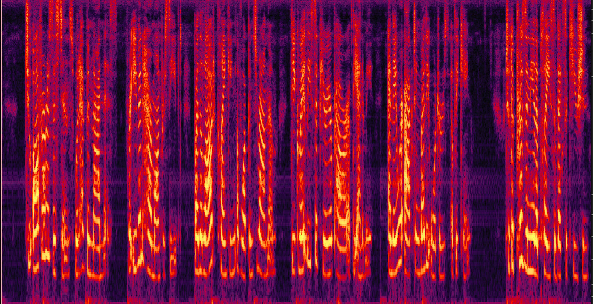 | 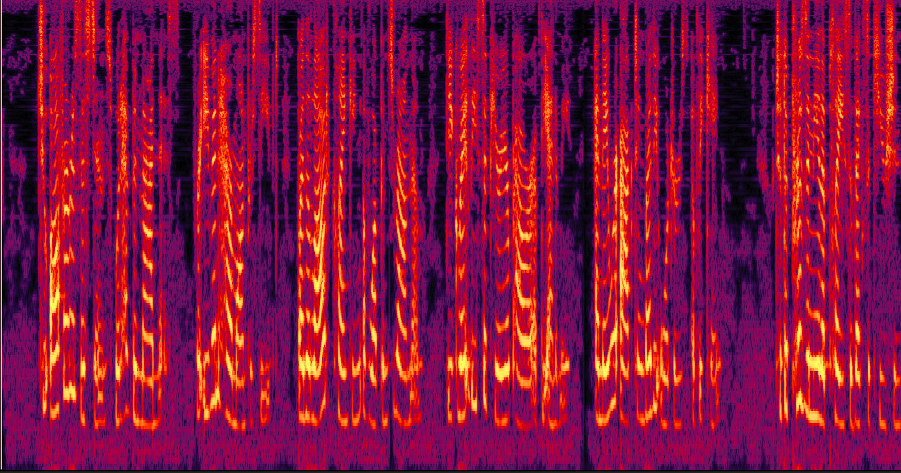 | 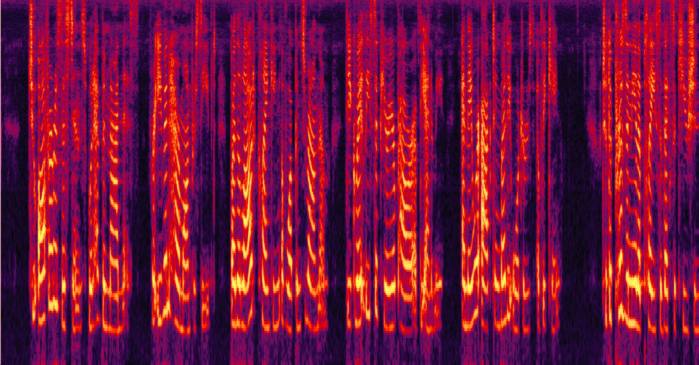 |
| Watermark 10 times | 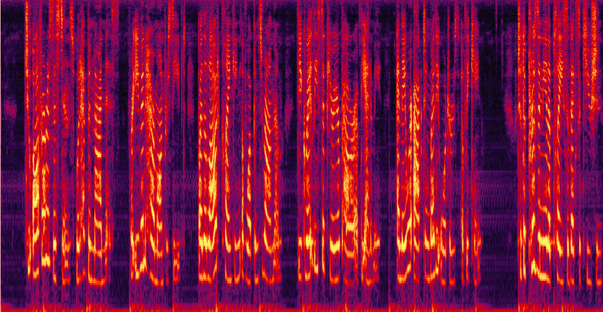 | 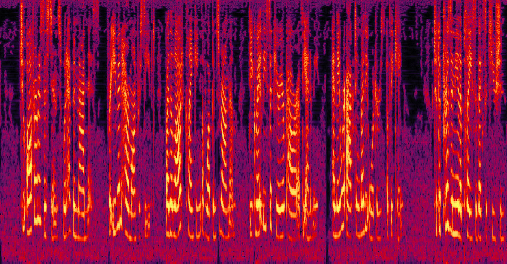 | 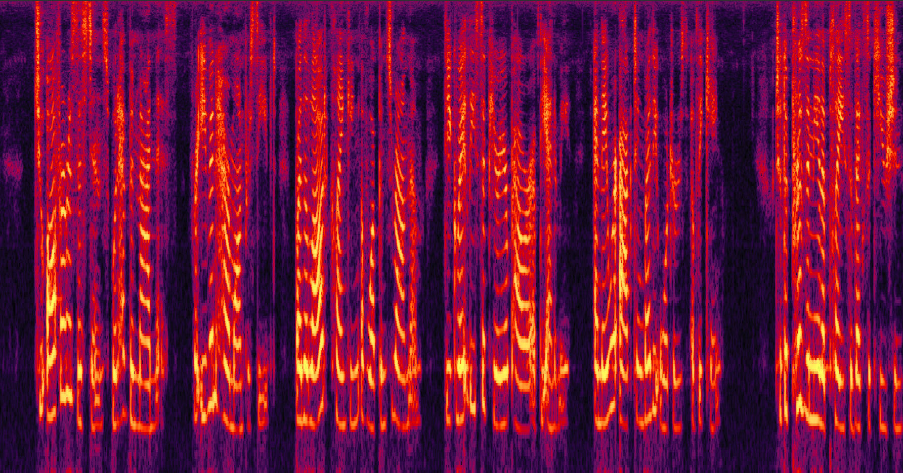 |